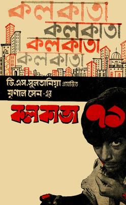
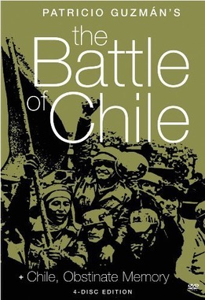
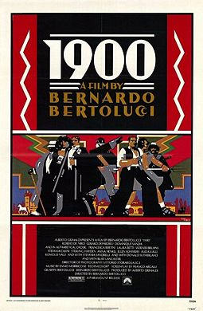
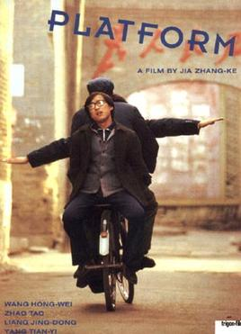
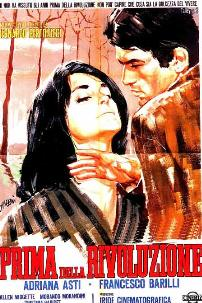
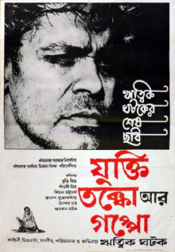
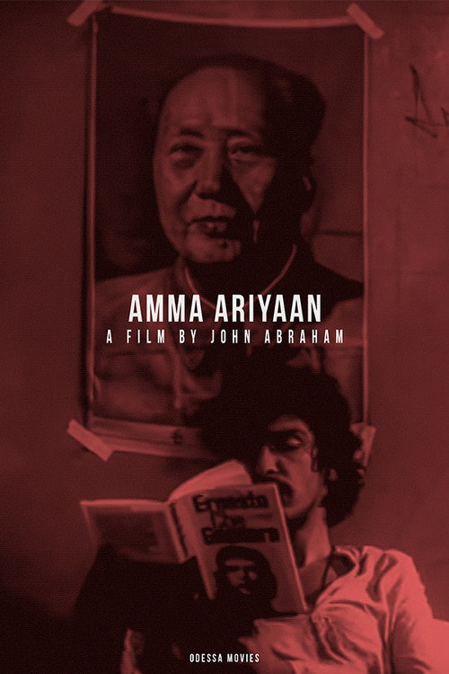
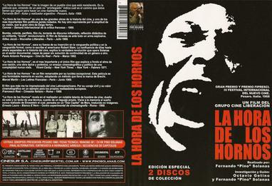
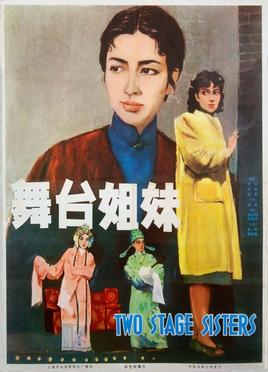

Можно ли снять
марксистский
фильм?
Шесть фильмов с пяти континентов
СССР, Италия, Аргентина, Чили, Индия, Китай. Полвека и тысячи километров между ними. Все шестеро пытались сделать одно — поставить марксизм на экран. И сделали это совершенно по-разному.
 1925Броненосец
1925БроненосецПотёмкин
 1927Октябрь
1927Октябрь
1972Калькутта 71
1975Битваза Чили

1976Двадцатыйвек

2000Платформамарксистский фильм?
Где мы в курсе
Девять лекций мы собирали инструментарий: как кино значит, усыпляет, очуждает, интерпеллирует, держит гегемонию. Теперь — поворот от теории к практике: посмотрим, как сами режиссёры пытались эти идеи воплотить. А две финальные лекции покажут, об какую стену эта попытка билась.
Марксизм в кино живёт в четырёх формах
Главная мысль лекции: «марксистский фильм» — не один жанр, а минимум четыре разных способа связать кино с Марксом. Это и будет наш маршрут.
Новый язык
Авангард переустраивает само кино, чтобы создать нового зрителя. Эйзенштейн, Вертов.
Классовый сюжет
История как борьба классов прямо на экране. Бертолуччи, Сен, Абрахам.
Кино как оружие
Фильм — часть революции, а не рассказ о ней. Третий кинематограф.
Критика и элегия
Скорбь по социалистическому проекту и его итогам. Цзя Чжанкэ.
Марксизм
как новый язык
Советский авангард не иллюстрировал революцию — он хотел переделать само зрение зрителя. Это марксизм, спрятанный не в сюжете, а в монтаже.
Октябрь
Монтаж мы разбирали в лекции 2 — здесь нас интересует другое. «Октябрь» снят по заказу к десятилетию революции: это фильм, который сама революция сделала о себе — и для своего нового зрителя.
Вопрос лекции в чистом виде: может ли кино не отражать революцию, а быть её инструментом?
У фильма нет героя — есть класс
Самый марксистский ход «Октября» — не сюжетный, а структурный: в фильме нет главного героя. Протагонист — масса. Историю двигают не великие люди, а классы и их действие. Эйзенштейн переводит исторический материализм в саму форму повествования.
Индивидуальный герой, его выбор и судьба — в центре. История — лишь фон для личности.
Коллектив как субъект истории. Лица сменяются толпой; смысл — в массовом действии, а не в личности.
Кино, которое создаёт зрителя —
и создаёт миф
Эйзенштейн мечтал об «интеллектуальном кино»: «боги», Керенский-павлин — образы, заставляющие зрителя думать понятиями, а не сопереживать. Цель — выковать аналитического, революционного зрителя. Но есть и оборотная сторона: инсценированный штурм Зимнего стал официальным образом Октября — кино не отразило революцию, а сочинило её канон.
Кино как мышление: зритель не потребляет эмоцию, а собирает смысл. Новый, активный субъект.
Тот же инструмент производит миф: реконструкция подменяет память. Форма служит и правде, и власти.
Авангард, раздавленный государством
Парадокс первой формы: радикальный киноязык расцвёл при революции — и был ею же удушен. В 1934-м социалистический реализм становится обязательным каноном, формальный эксперимент клеймят «формализмом».
Самая глубокая попытка: марксизм не как тема, а как переустройство самого восприятия. Кино-машина для производства сознания.
«Новый зритель» оказался не нужен государству, которому требовался послушный. Авангард сменили парадные биографии вождей.
Марксизм
как классовый сюжет
Здесь марксизм переезжает из монтажа в фабулу: историю прямо рассказывают как борьбу классов. Главный пример — грандиозный «Двадцатый век».

Перед революцией
Молодой буржуа из Пармы Фабрицио увлекается марксизмом и запретной любовью к тётке — а затем возвращается в свой класс, к удобному браку. Революция так и не наступает.
Ранний Бертолуччи задаёт вопрос о самом себе: может ли буржуа по-настоящему встать на сторону революции?
«Кто не жил до революции…»
Эпиграф из Талейрана: «Кто не жил до революции, не знает сладости жизни». В этом весь нерв фильма — герой влюблён в идею революции, но ещё больше в комфорт мира, который она должна снести. Марксизм для него — эстетика и страсть, а не разрыв.
Революция как соблазн, молодость, бунт против отцов и их морали.
Класс тянет обратно: брак, наследство, «сладость» прежней жизни побеждает.
и борьба миллионов
Двадцатый век
Олмо (Депардьё) и Альфредо (Де Ниро) рождаются в один день 1901 года — крестьянин и сын хозяина. Их судьбы — это весь итальянский XX век: батраки против падронов, рост фашизма, освобождение 1945-го.
Бертолуччи, член Итальянской компартии, делает классовую борьбу прямым двигателем сюжета — не метафорой, а самой материей фильма.
Марксистский эпос на голливудские деньги
И вот первое противоречие, к которому мы вернёмся в финале. Пятичасовой гимн классовой борьбе профинансировали голливудские студии (Paramount, 20th Century-Fox, United Artists), а играют его мировые звёзды — Де Ниро, Депардьё, Берт Ланкастер, Дональд Сазерленд.
Радикально марксистское: история как борьба классов, симпатия отдана крестьянам и рабочим.
Капиталистическая до конца: студийные деньги, звёздные гонорары, прокат ради кассы.
Левое параллельное
кино Индии
Параллельно Болливуду в Индии росло политическое «параллельное кино». Мринал Сен в «Калькутте 71» (1972) проводит сквозь десятилетия один сюжет — нищету и классовый гнев, доведённые до наксалитского бунта.
Корни — в IPTA, левом театральном фронте: это сердитое кино наксалитской эпохи, продолжение «трилогии о Калькутте» Сена. Целая школа, а не одиночки.

Доводы, споры
и сказка
Последний фильм Ритвика Гхатака. Он сам играет главного героя — Нилкантху Багчи, спившегося марксиста-интеллигента, который бредёт через Бенгалию, истерзанную наксалитским восстанием и расколом.
Режиссёр буквально выводит себя на экран — как обломок революционной надежды.
Марксизм, обращённый на себя
Если Бертолуччи показывал буржуа, который не смог, то Гхатак показывает марксиста, который попытался — и надломился. Спор героя с молодыми наксалитами, с женой, с самим собой — это спор всего левого движения о собственном поражении. Содержание тут не лозунг, а беспощадная самокритика.
Пьющий, проигравший, но не отрёкшийся интеллигент — лицо целого поколения бенгальских левых.
Раздробленная форма, споры вместо сюжета: марксизм как незаконченный, мучительный спор.

Amma Ariyan
«Доклад матери»: юноша по пути в Дели видит труп самоубийцы-барабанщика и пытается восстановить, кем тот был. Письмо-расследование собирает портрет целого радикального поколения Кералы.
Фон постера не случаен — Мао и Че: это кино о тех, кто жил левой идеей.
Фильм, оплаченный народом
Джон Абрахам отказался от продюсеров и студий. Его коллектив «Одесса» собирал деньги на фильм пожертвованиями — по деревням Кералы, и так же, с передвижного проектора, его потом и показывали. Кино полностью вне рынка: по содержанию, по способу производства и по способу показа.
Сбор по копейке
Народные пожертвования вместо студийного бюджета.
Проектор в деревне
Не кинотеатр-касса, а сельский сход — как у Третьего кино.
Кино-кооператив
Зритель — соучастник и соинвестор, а не потребитель.
Самый чистый ответ — и его хрупкость
«Amma Ariyan» — едва ли не идеальный «марксистский фильм»: о левых, левыми, для народа и без капитала. Но именно его судьба показывает предел: Джон Абрахам вскоре погиб, коллектив распался, фильм почти не виден массовому зрителю. Чистота далась ценой охвата.
Полное слияние идеи, денег и показа вне рынка — мечта Третьего кинематографа, осуществлённая.
Вне индустрии фильм почти невидим. Та самая стена, к которой мы придём в финале.
Марксизм
как оружие
Латинская Америка отвечает радикальнее всех: фильм — не рассказ о революции, а её часть. Так рождается Третий кинематограф.
Три кинематографа
Аргентинцы Фернандо Соланас и Октавио Хетино в манифесте «К третьему кинематографу» (1969) делят всё кино на три типа — и только третий считают живым.
Голливуд
Кино-товар. Зритель — пассивный потребитель, фильм — продукт индустрии.
Авторское кино
Европейский артхаус. Свободнее, но всё ещё индивидуалистично и вписано в рынок.
Кино-оружие
Militant cinema: коллективное, антиимпериалистическое, часть борьбы. Зритель — соучастник.
Фильм как политический акт

Четырёхчасовой боевой документ об империализме в Латинской Америке показывали подпольно — в профсоюзах и на квартирах, с паузами на дискуссию. Сеанс превращался в собрание. Здесь кино не описывает действие, а само является действием.
Камера внутри
революции и переворота
Патрисио Гусман снимал «Битву за Чили» прямо в 1973-м — последний год правительства Альенде и военный переворот Пиночета. Плёнку вывозили из страны контрабандой; фильм монтировали уже в изгнании.
Это кино-свидетельство: камера не реконструирует историю, а стоит в ней под огнём. Позже Гусман превратит это в работу памяти — мост к четвёртой форме.
Марксизм
как память и критика
Когда революции позади, остаётся четвёртая форма: не агитировать за социализм, а скорбно осмыслять, что с ним стало.

Сёстры по сцене
Две актрисы традиционной оперы проходят путь от 1930-х до освобождения: одну затягивает коммерческая слава, другая приходит к революционному сознанию. Классовое расслоение — прямо на подмостках.
Се Цзинь — главный автор соцреалистической эпохи: не топорная агитка, а пышная мелодрама об угнетении и пробуждении.
От обещания — к расплате
«Сёстры по сцене» и «Платформа» Цзя Чжанкэ — об одном и том же: артисты и социалистический проект. Только Се Цзинь снимает обещание (пробуждение классового сознания в 1964-м), а Цзя — расплату (как сорок лет спустя те же подмостки поглотил рынок).
Артистки идут к революции. Социализм как восходящая надежда, снятая изнутри.
Труппа дрейфует к поп-сцене. Социализм как утраченное прошлое, снятое как элегия.
Платформа
Государственная театральная труппа в 1980-е приватизируется и дрейфует от маоистских агитбригад к поп-концертам. На судьбе нескольких актёров Цзя показывает, как социализм тихо становится рынком.
Это не пропаганда и не агитка, а критическая память: что обещал проект — и что от него осталось.
Критика изнутри поражения
Четвёртая форма — самая близкая нам. Когда великие революции стали историей, марксистское кино перестаёт обещать и начинает помнить и анализировать: чем обернулась индустриализация, приватизация, «реформа». Цзя снимает не лозунг, а социальный диагноз эпохи перемен.
Вера, что кино приближает революцию. Агитпропа больше нет.
Марксистская оптика как инструмент критики: видеть классы и потери там, где рынок видит «прогресс».
Четыре ответа на один вопрос
«Снять марксистский фильм» можно минимум четырьмя способами — и каждый даёт свою эстетику, свою политику и свой риск.
Эйзенштейн, Вертов
Новый зритель. Риск — государство задушит авангард.
Бертолуччи, Сен
Классовый сюжет. Риск — раствориться в зрелище.
Соланас, Гусман
Кино-оружие. Риск — остаться в подполье, без зрителя.
Цзя Чжанкэ
Критика и элегия. Риск — меланхолия вместо действия.
Можно ли снять марксистский фильм
внутри капиталистической индустрии?
Все четыре формы упёрлись в одну стену. Чтобы фильм увидели, нужны деньги, плёнка, экраны, прокат — то есть индустрия, которую он критикует. «Двадцатый век» снят на голливудские деньги. Третий кинематограф ушёл в подполье и почти лишился зрителя. Цзя работает в зазорах китайского рынка и цензуры.
Внутри индустрии — тебя поглотит рынок. Вне её — тебя никто не увидит. Третьего пути почти нет.
Чтобы понять эту стену, надо разобрать саму индустрию — её экономику, собственность и власть.
Вопрос — где его покажут
К просмотру
По одному фильму на каждую форму — смотрите их как четыре разных ответа на вопрос лекции.
векБ. Бертолуччи · ИталияСодержание: классовая борьба как сюжет века — на студийные деньги.
К чтению
Капитализм сегодня
Режиссёры упёрлись в стену индустрии. Следующая лекция показывает капитализм уже на самом экране — «Паразиты», «Сквозь снег», — а финальная вскроет его политэкономию.